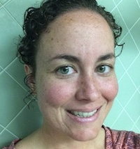

Regina Compton
Code wrangler. Storyteller. Perennial student.
Regina learned to code as an act of quiet defiance. The inflexibility of online, depressing drag-and-drop templates troubled Regina, who imagined more vibrant, more flexible, more beautiful ways to shape the web. So, she learned to code. Though a once self-proclaimed Luddite, Regina now enjoys the long stretches of time she spends having conversations with her Mac machine.Presently, Regina studies the art-of-talking-to-computers at Dev Bootcamp in Chicago.
Regina also likes to think about music, in particular opera. She dedicated the last three years of her life to the study of "simple recitative," a style of music that carries the dialogue in dramatic works. Scholars once ignored simple recitative, as though it were a stray dog or the last kid picked for dodge ball in gym class. Regina acknowledged the beauty and excitement of simple recitative. For this, some people said "nice job." Regina continues to research and contemplate music: she sneaks away to the Newberry Library on Sundays to study scores and let her computer relax.